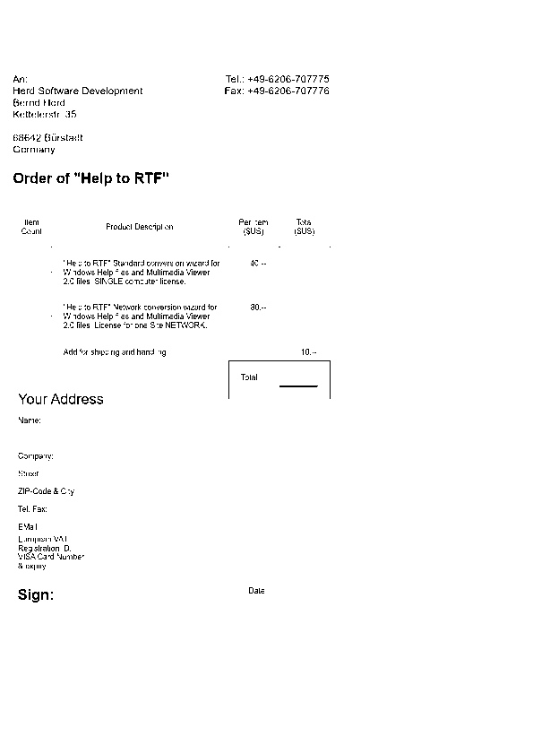

GWELL.rtf Gravity Well Page
Contents
Table of Contents:
Overview
Installation
Control Summary
Playing The Game
The Machines of War
Economic Model
Licensing and Passwords
Purchasing a License
Software Engineering, Inc.
Copyright Information
The age old conflict rages onward, spreading into another previously uncharted region of space. The race is on once again to establish strategic footholds and vital supply lines. Four seperate races struggle for dominance in a continuing battle for the stars. Planet by planet, sector by sector, the galaxy is claimed by those who can take it.
Gravity Well is a fast paced game of planetary conquest for Windows. It is a strategic war game that is played like an arcade game. The game represents a simple interstellar economy that supports the discovery and conquest of new worlds. The player's role is to scout new planets and establish landing sites for the colonization ships that follow. Once a landing site is established, freighters will be dispatched to begin construction of a base and colony complex. Beware though, you are not alone. There are others with the same designs on this sector of space as you have. Be prepared to fight for every stinking dirtball.
Playing The Game
The Machines of War
Economic Model
Gravity Well is easy to install, requiring no particular path or directory structure. The following steps describe how to install the program.
1. Copy the Gravity Well program files to a directory on your hard drive. It does not have to be in your path.
2. Locate the GWELL.EXE file on your hard drive using the File Manager.
3. Using the mouse, select and drag the GWELL.EXE file from the file list in the File Manager and drop it in the Games group in the Program Manager. If your CPU has a math coprocessor, you should use GWELL_FP.EXE. It has been compiled especially for computers with a math coprocessor and will be slightly faster; it will not run if your computer does not have a math coprocessor. If you are installing Gravity Well under Windows 95 or Windows NT, or your Windows 3.11 system has Win32s installed, you should use GWELL32.EXE. It has been compiled especially for the Microsoft Win32 sub-system.
4. To play Gravity Well, double click on the Gravity Well icon in the Games group of the Program Manager.
The maximum number of stars in the game is six. Each star can have a maximum of three planets orbiting it for a total maximum of eighteen planets
The minimum number of stars in the game is four. Each star can have a minimum of one planet orbiting it for a total minimum of four planets.
Key Commands
Key commands are used for controlling your ship and your view.
Left Arrow Rotate Ship to the Left.
Right Arrow Rotate Ship to the Right.
Up Arrow Apply forward thrust.
Down Arrow Fire Gun.
F Fire Gun.
D Fire Rocket/Missile.
PgUp Increase view magnification.
PgDn Decrease view magnification.
End Restore default magnification
F1 or Home View Blue Leader's fighter.
F2 View Red Leader's fighter.
F3 View Purple Leader's fighter.
F4 View Yellow Leader's fighter.
Esc Refreshes the window.
Pause Pauses the game. Time ceases to tick.
Mouse Commands
The mouse is used to select a ship. The display window will scroll automatically to keep the selected ship in view. When a ship other than the player's fighter is selected, the ship will be drawn in white rather than blue in the view window. When a ship is selected, its name is displayed in red in the ship list and it's status indicators are scrolled into view. The radar display shows the selected ship surrounded by a white box.
· Clicking in the radar display will view the closest friendly ship to the cursor.
· Clicking on the status displays for your fighter views your fighter.
· Clicking in the ship list will view the selected ship.
· Clicking on a friendly ship in the main view window will view that ship.
Command Line Options
There are few command line options for Gravity Well. The options are specified on the command line when the program is executed. Command line options are case sensitive.
-max Always generate the maximum number of stars and planets in each sector.
-min Always generate the minimum number of stars and planets in each sector. This option is handy when running on a slow computer.
Your Objective
You will start in each new sector with a well established complex. This complex produces the raw and finished materials you need to expand to other planets. Your objective is to claim all of the planet in this sector for your empire. As you will soon discover, there are others with the same plans. Three opponents will be fighting for the same small group of planets. The only sure way to defeat an opponent is to destroy all of its colonies and freighters, halting its expansion efforts in this sector.
Establishing a New Complex
To establish a new complex, you must simply visit the planet of your choice and land there, planting a flag in the dirt and claiming it for your empire. Once you have successfully landed, freighters from your empire will automatically be dispatched to do the hard work, that of digging sewers, making buildings, and otherwise scratching up a good place to call home. Eventually, they will build up the complex to parallel the one you started with.
Once a ship construction facility has been completed, the new complex is capable of building freighters and fighters. As the war ensues, you may decide to have new fighters constructed closer to the action. New fighters are constructed by Labs and by Space Docks. To instruct a ship construction facility to be the fighter manufacturing location, you must visit there personally. After you have landed there, future fighters will be constructed there.
Landing Your Fighter
One of the most challenging manoeuvres you must perform is landing your ship. There are two location at which you can land your fighter safely, the flight deck of a High Port and the surface of a planet. The beginning player will find landing on the surface of a planet much easier than the High Port. Neither landing site has any particular advantage over the other. Landing on the surface of planets is essential to expanding your empire.
To land on a planet or High Port, you must move your fighter into contact at the correct rotation and at a slow enough velocity. In either case, you must rotate your ship so that both thrusters are firing against the force of gravity. Allow the planet's gravity to draw your ship toward the landing site, firing thrusters as necessary to keep your speed down. The ship's velocity indicator changes to a blue background when your speed is slow enough to land safely. If your ship is rotated incorrectly, it will be damaged and often settles to a stop in the proper orientation. Excessive speed will cause the immediate destruction of your ship upon landing.
View Window
The view window provides the primary view of your fighter and other ships. This window maintains a view of one of your ships at all times; it is scrolled automatically to keep the selected ship in view. Using the mouse in this window, you can select ships in your navy to watch. With the exception of fighters, the selected ship is drawn in white to set it apart from others of its kind. A view of your opponents' fighters can be selected using keyboard commands. The selected ship will appear in the Radar Display surrounded by a white box. The selected ship appears in the Ship List with red text.
Radar Display
The radar display provides a reduced view of the entire sector. Stars are shown as large yellow dots. Planets are shown as medium-sized green dots. A colored box will appear around explored planets, indicating which player has claimed it. Ships are displayed as small colored dots. All freighters appear in the same color regardless of allegiance as they are strictly commercial vessels. The selected ship in the View Window will appear surrouned by a white box in the Radar Display. The selected ship appears in the Ship List with red text.
Ship Indicators
Beneat the Radar Display is a set of status indicators for the selected fighter. When an enemy fighter is selected, it's information will be displayed here. When your fighter or any of your other units is selected, information about your fighter is displayed here. Clicking the mouse anywhere on the ship's indicators switches the view to your fighter.
The status indicators are described here from top to bottom and from left to right.
· Opponent Status - The row of four colored boxes indicates which opponents are still battling for this sector. As opponents are defeated, their corresponding colored box will turn black. When your labs have a new development ready, this box will flash.
· Shields Indicator - A solid light blue bar indicates that your fighter's shields are at maximum capacity. As the shields absorb damage, the bar will turn dark blue. When this bar is completely blue, your shields are destroyed.
· Rocket/Missile Count - If your fighter has been fitted with rockets or missiles, your remaining ammunition will be displayed here as a row of colored vertical lines, one for each rocket/missile. The color of this display will correspond to the type of munition installed. Purple is for rockets; white is for missiles.
· Damage Indicator - A solid green bar indicates no damage. As your ship accumulates damage, this bar will become red. When this bar is completely red, your fighter is destroyed.
· Velocity Indicator - A bright cyan bar will fill this indicator to show your speed relative to your maximum speed. You will find that accelerating to full speed and decelerating to a complete stop will take a considerable distance. The background of this indicator will turn blue when you are moving slowly enough to land.
· Clock - This shows your current system time. If it's incorrect, you should check your Control Panel.
· Nearest Star Indicator - The yellow indicator always points to the nearest star to your fighter.
· Nearest Planet Indicator - The green indicator always points to the nearest planet to your fighter.
· Nearest Enemy - The red indicator always points to the nearest enemy unit to your fighter. The background of this dial will turn red when you are near an enemy unit.
· Fighter Orientation - This displays the current orientation of your fighter.
Ship List
The ship list shows information about all of your units, except your fighter. Each list entry is composed of three lines of information as follows:
· Unit number and name - This information identifies the unit type and unique number. If a friendly unit other than your fighter is selected in the view window, this text will be displayed in red and scrolled into view. For Space Docks and Sensor Arrays, the name will also include a number indicating the High Port to which the unit is attached.
· Damage Indicator - This indicator shows damage accumulated by the unit. When the bar is completely red, the unit is destroyed. In this list, the damage indicators are scaled such that the relative strengths of the various units is apparent.
· Materials Indicator - This bar shows the amount of materials stored by the unit. In the case of Freighters and Colonies, this is a measure of 'raw' materials. For Bases and High Ports, this is a measure of 'finished' materials. Refer to The Economies of Gravity Well for a description of how materials are manufactured and expended.
See also:
The Machines of War
Economic Model

The Machines of War
There are nine different types of units in Gravity Well; these are the vehicles and structures that make up each player's empire. The following discussion describes the role of each of these units in the game.
Remember, empires may come and go but the scarred planet remains.
Base
The base is the first installation built on a new planet. It serves as the headquarters for the installations that follow. The base is one of the only two units that can convert raw materials produced by a colony into finished materials.
The base includes a military garrison to man planetary defense sites. Planetary defenses will automatically respond when enemy vessels are in range.
Colony
The colony is the source of raw materials for the expansion of your empire. Colonies are the only units in the game that produce raw materials. Raw materials can be transported by freighters to other planets to construct new colonies, bases, and high ports. When all of your colonies and freighters have been destroyed, you cannot expand in the sector.
Comm Center
Comm centers gather electronic intelligence data and relay it to your fighter. This provides the information necessary to maintain the radar display.
Fighter
The fighter is the leader of your forces in the sector. It is the most versatile of all the units. It is also the only unit that the player directly controls.
In a scouting role, the fighter is used to stake a claim on new planets and to defend that claim. Doing so automatically directs friendly units to start colonizing the planet as quickly as possible. Freighters will be dispatched when ready to construct planetary installations and a high port.
As an offensive weapon, the fighter is capable of destroying enemy planetary complexes so that friendly installations can be constructed on the planet. Also, enemy shipping is disrupted by intercepting freighters before they are able to construct new installations or resupply those in desperate need.
The fighter is also defends the units it leads. The fighter's role is to defend friendly installations and vessels from enemy attack.
Freighter
The freighter is the vehicle of colonization and commerce in Gravity Well. It fulfills several needs.
Primarily, the freighter is used to transport materials to new planets for the purpose of colonization. When colonizing a planet, each installation that is constructed consumes the freighter as well as its cargo. In order to construct an installation, a freighter must be completely filled with cargo. The freighter's role in colonization consists of constructing three facilities, a base, a colony, and then a high port, in that order.
Second, the freighter is used to resupply installations in need of raw materials. Units at a planet which does not have a colony will slowly run out of materials due to combat damage repairs. Freighters will attempt to keep these units supplied with the materials they need until a new colony is built.
High Port
The high port is essentially an orbiting base. It provides a landing site for the fighter. It also serves as the support structure for the space dock and sensor array units.
The high port includes a military garrison to man orbital defenses. Orbital defenses will automatically respond when enemy vessels are in range.
Lab
The lab is a planetary installation that is capable of constructing space ships. It will automatically construct new freighters and fighters when necessary, providing the host base has sufficient finished materials available.
Labs also assist in the development of high technology upgrades for your fighter. All of your labs work cooperatively so having more labs increases their chance to produce something. When your labs have completed a new development, all of them will begin to flash. Landing at a base or high port which accompanies a lab will then result in the installation of the new upgrade. When a new fighter is constructed, it is automatically fitted with any upgrades available.
Sensor Array
Sensor arrays gather electronic intelligence data and relay it to your fighter. This provides the information required to maintain the radar display.
Space Dock
The space dock is an orbital installation that is capable of constructing space ships. It will automatically construct new freighters and fighters when necessary, providing the host high port has sufficient finished materials available.
See also:
Playing The Game
Economic Model
The economic model governs the flow of materials in Gravity Well. This model describes how materials are manufactured, transported, and consumed. This process is completely automated in the game, requiring no user interaction. The relationships between the units are shown here only to provide a deeper understanding of the mechanisms in place.
Unit construction is an important role of the Lab/Base and Space Dock/High Port complexes, and of the Freighter, which is the primary vehicle for colonization. The constructor unit must have enough finished materials available to construct the new unit. A new unit will only be constructed if no other unit of that type is present, either on the planet or in orbit, as appropriate.
Base
· Converts raw materials to finished materials.
· Repairs itself from its own stores of finished materials.
· Constructs Lab from finished materials.
· Constructs Comm Center from finished materials.
·
Colony
· Supplies the Base it accompanies with raw materials.
· Repairs from the Base it accompanies using finished materials.
· Supplies the High Port in orbit with raw materials.
Comm Center
· Repairs itself from the stores of the Base it accompanies, consuming finished materials.
Fighter
· Repairs from a Base if dirtside. Consumes finished materials.
· Repairs from a High Port if docked. Consumes finished materials.
Freighter
· Supplies High Port with raw materials.
· Repairs from a High Port it is orbiting with, using finished materials.
· Supplies Base it is orbiting with raw materials if no Colony is present.
· Loads raw materials from Colony it is orbiting.
· Repairs from a Base it is orbiting. Consumes finished materials.
· Constructs Base. The cargo holds must be full and construction consumes the freighter.
· Constructs Colony. The cargo holds must be full and construction consumes the freighter.
· Constructs High Port. The cargo holds must be full and construction consumes the freighter.
High Port
· Converts raw materials to finished materials.
· Repairs itself from its own stores of finished materials.
· Constructs Space Dock using finished materials.
· Constructs Sensor Array using finished materials.
Lab
· Repairs from the stores of the Base it accompanies. Consumes finished materials.
· Constructs Fighter from finished materials of the Base it accompanies.
· Constructs Freighter from finished materials of the Base it accompanies.
Sensor Array
· Repairs from the High Port it is attached to, consuming finished materials.
Space Dock
· Repairs from the High Port it is attached to, consuming finished materials.
· Constructs Fighter from finished materials of the High Port it accompanies.
· Constructs Freighter from finished materials of the High Port it accompanies.
See also:
Playing The Game
The Machines of War
created with Help to RTF file format converter
Gravity Well is distributed under the SHAREWARE concept. This is NOT free or "public domain" software. Upon installation of Gravity Well, you are allowed to use it free of charge for 30 days in order to try the program. After evaluating the software, you are expected to decide whether to continue using it or not. If you choose to continue using the software, you must purchase a license. If you find that Gravity Well does not meet your needs or perform to your expectations, simply remove it from your system.
A license to use Gravity Well on your system can be purchased directly from Software Engineering, Inc. A license for Gravity Well must be purchased for each CPU that will be executing the program, even if they all execute it from a common server on a network. A license gives you the right to use OUR software on YOUR computer forever.
Until you purchase a software license, the Authorization dialog will appear every time you execute Gravity Well . This serves as a reminder that you are only evaluating the software and have not yet purchased a license. When you purchase a license, you will be issued a software license number and password. These are entered into the Authorization dialog, available by selecting Game|Authorize from the Gravity Well menu bar. Once entered, Gravity Well will run without notification messages. Features which are disabled in the demonstration will be enabled once the software is authorized. You should save your license number and password in a safe place in case you should have to reload Gravity Well in the future.
Also, your license number and password will work on future versions of Gravity Well. This way when a new version is released, you simply need to get a new copy of the software to take advantage of the new features.
Note:
Some versions of Gravity Well are distributed under a prepaid licensing agreement. Those versions do not ask for a license number. If you have purchased one of the following versions of Gravity Well, you do not need to order a license from Software Engineering, Inc.
· Version 3.6 - Distributed by Limelight Publishing, LLC
· Version 3.6 - Distributed by Computer Curriculum Corporation
See also:
Purchasing a License
A license to use Gravity Well on your system can be purchased directly from Software Engineering, Inc. The cost is $29.95 in U.S. dollars. Please send a check or money order; it is never wise to mail cash. No COD orders, please. We will issue your license number and password promptly by fax or e-mail if you provide your fax number or e-mail address.
You may use the following form when submitting your order:
Please send me ____ software licenses for Gravity Well at just $29.95 each plus $3.95 S/H for the first license. Add $1.00 S/H for each additional license ordered. Colorado residents add sales tax.
Company:_______________________________________
Name:__________________________________________
Address:_______________________________________
_______________________________________________
_______________________________________________
Phone:_________________________________________
Fax:___________________________________________
E-mail:________________________________________
Enclosed is my check or money order payable to:
Software Engineering, Inc.
8352 S. Sunnyside Place
Highlands Ranch, Colorado 80126
303-470-7142, 303-470-1156 FAX
GravityWell@freehome.com
Amount enclosed $__________
"Excellence By Design"
Software Engineering, Inc.
8352 S. Sunnyside Place
Highlands Ranch, Colorado 80126
303-470-7142, 303-470-1156 FAX
SEi@freehome.com
We are in the business of developing high quality software for Microsoft Windows, specializing in C and C++ object oriented design. Our highly skilled team of developers has many years of experience writing software. If you have software development needs, we have the resources to do the job for you.
The experience base at Software Engineering spans many hardware platforms and operating systems, including Apple, Unix, DOS, and Windows (since version 1.0). We can port software to Microsoft Windows for you from many languages and platforms. We also have extensive experience in many specialized areas of programming, such as client/server applications, SQL, CAD, image processing, and network communications.
Gravity Well has been a fun diversion and an interesting experiment. If you have serious work to do, give us a call or send some e-mail. Someone will be sure to get back to you.
Gravity Well
Copyright 1995, Software Engineering, Inc. All Rights Reserved.
Software Engineering, Inc. disclaims all warranties as to this software, whether express or implied, including without limitation any implied warranties of merchantability, fitness for a particular purpose, functionality, data integrity or protection.
Windows and MS-DOS are trademarks of Microsoft Corporation.
Trademarks of other companies mentioned in this documentation appear for identification purposes only and are the property of their respective companies.